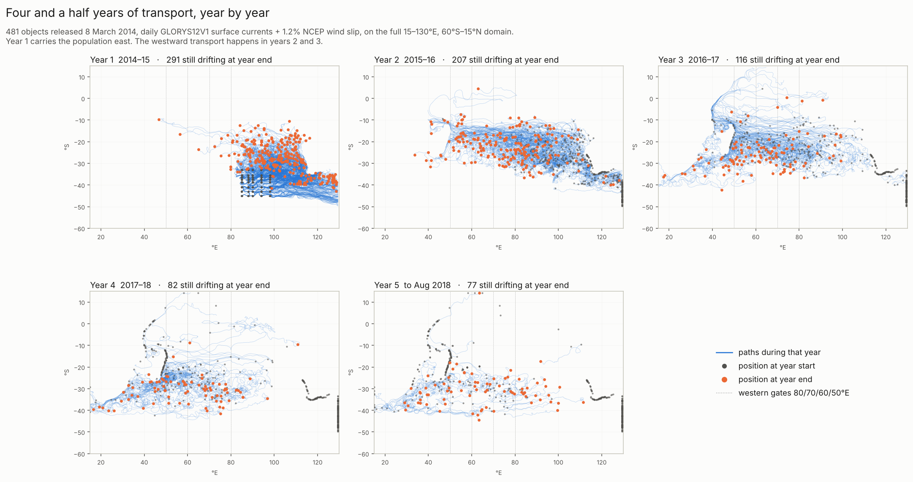
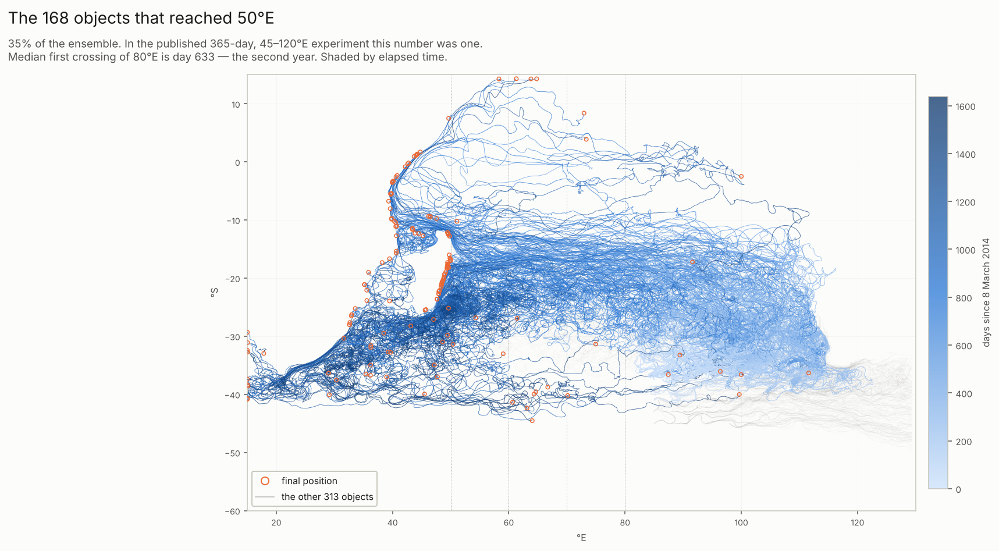
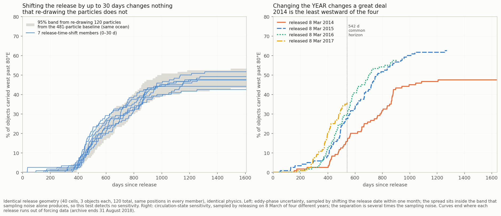
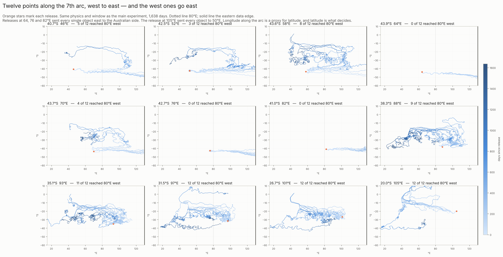

The same 481 floating objects, released 8 March 2014, carried to 31 August 2018 — 1,638 days of the ocean that actually existed. Daily GLORYS12V1 surface currents over 15–130°E and 60°S–15°N, plus 1.2% of the monthly-mean NCEP wind. Nothing was steered toward any discovery. Run 14 October 2026; code and full report in MH370-Ocean-GLORYS-Data at commit ab19feb.
The years are not alike. They are three distinct phases, and they are phases of the ocean rather than of the model.
| Period | Still drifting at year end | Stopped during the year | New crossings of 80°E west | 70°E | 60°E | 50°E | New crossings of 110°E east | Median position at year end |
|---|---|---|---|---|---|---|---|---|
| Year 1 2014–15 | 291 | 190 | 11 | 4 | 3 | 2 | 334 | 103.1°E, 27.9°S |
| Year 2 2015–16 | 207 | 84 | 134 | 99 | 76 | 41 | 4 | 78.9°E, 22.4°S |
| Year 3 2016–17 | 116 | 91 | 77 | 103 | 101 | 93 | 0 | 62.2°E, 27.1°S |
| Year 4 2017–18 | 82 | 34 | 10 | 17 | 22 | 29 | 1 | 59.2°E, 30.6°S |
| Year 5 to 31 Aug | 77 | 5 | 1 | 1 | 3 | 3 | 1 | 63.4°E, 31.3°S |
Year one is the eastward year. Two-thirds of the ensemble is carried past 110°E; the median object sits at 103°E on the first anniversary; 190 objects stop, and 189 of those stop against the eastern side of the basin. Eleven cross 80°E westward in the entire year, the earliest on day 193.
Year two is the crossing. The median object moves from 103°E to 79°E — roughly 2,400 km west — and 134 objects cross 80°E, twelve times the first year's count. This is the subtropical gyre's northern limb, the South Equatorial Current, doing what the one-year study glimpsed only the start of.
Year three is the arrival. 103 objects cross 70°E, 101 cross 60°E, 93 cross 50°E. The attrition changes hemisphere: of 91 objects that stop, 76 stop on the Madagascar–Africa side against five in the east.
Years four and five are residual. Crossings fall away and the surviving 77 objects sit between 36 and 93°E.

Each panel shows one year. Grey dots are where objects stood at the start of the year, orange where they stood at the end. The eastward year, the crossing, and the arrival are visible as three different pictures.
| By the end of | Past 80°E | Past 70°E | Past 60°E | Past 50°E |
|---|---|---|---|---|
| Year 1 | 11 | 4 | 3 | 2 |
| Year 2 | 144 | 103 | 79 | 43 |
| Year 3 | 222 | 206 | 180 | 136 |
| Year 4 | 232 | 223 | 202 | 165 |
| Year 5 | 233 | 224 | 205 | 168 |
Of 481 released. The median first crossing of 80°E is day 633 — well outside any one-year window.

The 168 objects that reached 50°E, shaded by elapsed time. In the published one-year experiment this number was one.
The wider domain and the longer window were introduced together, which would normally make the cause unattributable. Here it can be separated, because this run can simply be read at day 365 and compared with the published run at the same instant.
| Gate | Published run, 45–120°E, at 365 days | This run, 15–130°E, at 365 days |
|---|---|---|
| 80°E west | 13 | 11 |
| 70°E west | 4 | 4 |
| 60°E west | 2 | 3 |
| 50°E west | 1 | 2 |
| 100°E east | 451 | 447 |
| 110°E east | 328 | 334 |
Every gate agrees to within a few objects — the same order as the difference between a six-hour and a three-hour timestep. At a fixed one-year window, widening the domain changes western access by two objects. The window is doing all of the work.
The domain did matter for where objects were lost: 291 were still drifting at day 365 here against 246 in the published run, and there were no eastern domain exits at all, because the boundary moved. But it did not change whether anything went west in year one.
| Release latitude | Reached 80°E | 70°E | 60°E | 50°E | Reached 110°E east | Still drifting | Median distance travelled |
|---|---|---|---|---|---|---|---|
| 33°S | 95.0% | 90.0% | 85.0% | 70.0% | 5.0% | 20 | 20,098 km |
| 35.5°S | 85.0% | 80.0% | 76.7% | 65.0% | 38.3% | 18 | 19,950 km |
| 36.5°S | 85.0% | 81.7% | 73.3% | 60.0% | 51.7% | 16 | 18,609 km |
| 37.5°S | 76.7% | 75.0% | 66.7% | 55.0% | 75.0% | 14 | 19,210 km |
| 38.7°S | 23.3% | 23.3% | 18.3% | 11.7% | 96.7% | 5 | 5,658 km |
| 41°S | 21.7% | 21.7% | 20.0% | 16.7% | 98.3% | 4 | 5,865 km |
| 43°S | 0% | 0% | 0% | 0% | 100% | 0 | 3,994 km |
| 45°S | 0% | 0% | 0% | 0% | 100% | 0 | 3,921 km |
Over one year the latitude dependence was a smooth gradient. Over four and a half it is much sharper: releases from 33 to 37.5°S reach 80°E at 77–95%, falling to 23% at 38.7°S and to zero at 43°S. Objects released in the north travel about 20,000 km before they stop; those in the south travel about 4,000 km.
| Outcome at 31 August 2018 | Count |
|---|---|
| Still drifting | 77 |
| Stopped in the interior — coastline or masked cell | 395 |
| Left the western edge of the data, past 15°E | 9 |
| Left the eastern, northern or southern edge | 0 |
With the domain reaching 15°E, most terminations are no longer censoring by a data boundary but contact with a coastline — Africa, Madagascar, Australia. They are still recorded as masked-cell exits, because telling a true coast from a masked ocean cell needs a coastline product this project does not have. No termination is called a beaching. 75 objects stopped in the Madagascar box, 42–52°E and 11–27°S; 34 stopped west of 42°E on the African side.
Western-side terminations by calendar year: 20 in 2015, 82 in 2016, 21 in 2017, 5 in 2018. The first was 12 February 2015 and the median 11 July 2016.
The G0 conditional water-contact coordinate (38.70590°S, 90.41482°E) was released with the grid, coordinates only, with no score and no terminal diagnostic entering this experiment.
| After year 1 | 30.57°S, 110.55°E — far east |
| After year 2 | 17.78°S, 53.77°E |
| Stopped | 2 April 2016, 19.99°S, 48.98°E — the Madagascar coast |
| Path | 14,726 km travelled, tortuosity 3.25, first crossed 80°E on day 550 |
Two things could have produced this result without the ocean doing it: too coarse a timestep, and a wind field averaged to monthly means. Both were tested at full length, each changing one thing and holding the ocean, the releases and the window fixed.
| Baseline 6 h, monthly winds | 3 h, monthly winds | 6 h, daily winds | |
|---|---|---|---|
| Reached 80°E west | 233 | 238 | 256 |
| Reached 70°E | 224 | 233 | 251 |
| Reached 60°E | 205 | 214 | 233 |
| Reached 50°E | 168 | 154 | 180 |
| Reached 100°E east | 447 | 447 | 447 |
| Median first crossing of 80°E | day 633 | day 655 | day 597 |
| Median distance travelled | 10,686 km | 11,676 km | 13,378 km |
| Median net displacement | 3,316 km | 3,445 km | 3,360 km |
| Median westernmost longitude | 84.3°E | 84.1°E | 63.5°E |
Both conclusions survive, and so does the shape of the story. New crossings of 80°E by year, in the three runs:
| New 80°E crossings | Baseline | 3 h | Daily winds |
|---|---|---|---|
| Year 1 | 11 | 15 | 22 |
| Year 2 | 134 | 124 | 148 |
| Year 3 | 77 | 84 | 74 |
| Year 4 | 10 | 15 | 11 |
| Year 5 | 1 | 0 | 1 |
Year one is the eastward year and year two is the crossing in every configuration.
Halving the timestep moves western access by 5 objects in 481 at 80°E and 14 at 50°E, and leaves the latitude pattern alone, 43 and 45°S included. It does nothing for individual trajectories: among the 24 objects still drifting in both runs at the end, corresponding positions differ by a median of 1,296 km and up to 5,039 km, and only 77% of the western crossers are the same objects.
Resolving the wind daily is the larger effect, and it runs in the direction that makes the baseline conservative rather than generous: more objects reach the west, not fewer, and about five weeks sooner. It adds a great deal of small-scale motion — distance travelled up 25%, tortuosity from 2.61 to 3.00 — while median net displacement is unchanged at about 3,350 km. That is what resolving wind variability looks like physically: more wiggle, the same destination. By release latitude the pattern is preserved but not identical (41°S rises to 47%, 37.5°S falls to 67%), and 43 and 45°S remain at exactly 0% in all three runs.
Neither test samples uncertainty in the ocean field, which remains a single reconstruction. That was the largest limitation left standing, and it has since been measured as far as one product allows — see How much of this is the ocean we chose? below. The short version: the fine structure of the ocean does not move these numbers, the year does, and the year cannot be cross-checked.
An aircraft striking water does not put one object in the sea. It puts a field of them, a few kilometres across, and everything anyone might later infer about how the aircraft broke up is encoded in the width and shape of that field. The question is how long the ocean lets that information survive.
The main experiment already answers the first half without any new computation. Each of the 40 release cells is twelve objects scattered within about 5 km of a common point — which is a debris field of exactly the scale in question, run forty times over.
| Time since release | Median separation between objects released together |
|---|---|
| day 0 | 8.6 km |
| day 30 | 36.6 km |
| day 90 | 157.6 km |
| day 180 | 366.7 km |
| day 365 | 1,043 km |
| day 1,638 | 3,355 km |
Eighteen-fold growth in three months, a hundred and twenty-fold in a year. And the separation is one-way: of 2,640 pairs released together, only 3.9% ever came back within 50 km of each other after once being more than 500 km apart. Objects that part company in this ocean do not meet again.
The consequence for the regime boundary is sharper still. In 24 of the 40 release cells, some objects reached 80°E westward and others from the same five-kilometre patch never did. Two fragments entering the water within sight of one another finish on opposite sides of an ocean — the widest such pair ended 10,137 km apart, and the median cell scattered its twelve objects over 2,410 km.
If a mid-air break-up leaves a wider initial field than an intact impact, that difference is in principle recoverable later. A separate experiment tested whether it is: three clouds of 60 objects per cell at initial spreads of 0.5, 2 and 10 km, over the same 40 cells, 180 days, identical frozen physics. The 0.5 km cloud is a control, present to show the measurement can resolve a difference at all rather than saturating.
| Day | 0.5 km cloud | 2 km cloud | 10 km cloud | Ratio 10:2 | Cells where the 10 km cloud is still wider |
|---|---|---|---|---|---|
| 0 | 0.8 km | 3.4 | 16.5 | 4.92 | 40 / 40 |
| 30 | 3.7 | 15.6 | 85.4 | 4.74 | 40 / 40 |
| 90 | 32.0 | 92.9 | 203.8 | 2.16 | 36 / 40, p = 2×10−7 |
| 180 | 223.3 | 293.0 | 323.3 | 1.22 | 31 / 39, p = 3×10−4 |
The initial width is not erased within the first year. The criterion for "indistinguishable" was fixed before the run — a ratio below 1.25 and a sign test failing at p < 0.05 — and at 180 days the ratio has fallen below the threshold while the sign test is still decisive. By its own declared rule the two spreads remain separable at six months. The control confirms the metric is not saturating: the 10 km-to-0.5 km ratio runs from 20 down to 1.65 and does not reach unity.
What is happening is dilution rather than mixing. All three clouds converge toward a common width set by the flow — somewhere near 250–350 km — approaching it from different directions at different rates. The ratio collapses from 5:1 to 1.2:1 while the absolute scale grows a hundredfold.
Prediction on the record: before running this, Claude expected the initial condition to be swamped by 90 days. It is not — at three months the wider cloud is still 2.2× wider in 36 of 40 cells. The expectation was wrong and the declared criterion, not the expectation, decided the result.
Everything on this page rests on one reconstruction of the ocean: GLORYS12V1 daily surface currents. The real ocean had one history; the reanalysis is an estimate of it. Until now that gap has been named as a limitation and left unmeasured, and it was the largest open item in the work.
GLOBAL_MULTIYEAR_PHY_ENS_001_031) spans 1993 to 2018 at a quarter-degree and carries three independent reconstructions — ORAS5, C-GLORS and GLORYS2V4 — all of which cover March 2014. It is being acquired now. The claim that this could not be cross-checked is withdrawn; the measurements below are unaffected and stand as they are.What can be done with one product is to vary the ocean within it, using real fields and inventing nothing. Two things were varied, each in its own set of runs, with the release positions held byte-identical in every member so that any difference is caused by the ocean and by nothing else.
A third component — systematic error in the reanalysis itself, motion too small for its grid, and the model's own omissions (no diffusion, no Stokes drift, no leeway) — cannot be sampled from inside one product and is not sampled here. What follows is a floor on ocean uncertainty, not an estimate of it.

The same measurement in both panels: the share of objects carried west past 80°E as time runs. Left, the ocean's fine structure is varied and the curves stay inside the grey band. Right, the year is varied and they do not.
The honest comparison needs a control, and it is measured rather than assumed. Each of these runs uses 120 objects where the main experiment uses 481. A smaller sample scatters the counts on its own, with no change in the ocean whatever. So the baseline was repeatedly thinned to the same 120-object design, four thousand times, and the scatter that produced is the grey band. Nothing is called an ocean effect unless it is bigger than that band.
| Measured quantity | Spread across the seven runs | Band from re-drawing alone | Ratio |
|---|---|---|---|
| Reached 80°E | 51–62 | 52–64 | 1.21 |
| Reached 50°E | 33–43 | 34–49 | 0.90 |
| Reached 110°E | 80–86 | 79–90 | 0.81 |
| Median day to 80°E | 514–665 | 560–714 | 1.42 |
| Median day to 50°E | 748–971 | 799–955 | 1.67 |
Every spread sits inside, or barely outside, the band that thinning the sample produces by itself. With only seven runs the ratio is poorly pinned down — the honest interval for a spread measured on seven numbers covers a factor of about 0.65 to 2.2 — so every ratio in that table is consistent with 1.0. Moving the release by up to a month changes the headline counts by roughly five objects in 120, which is what re-drawing the objects does anyway. This test detects no sensitivity to the ocean's fine structure, which is a real result for the numbers on this page, and it is a floor rather than a clean bill of health: thirty days may be shorter than the time these features actually take to rearrange.
| Released 8 March | Reached 80°E by day 542 | Reached 110°E by day 542 | Reached 80°E by day 907 | Median longitude, day 907 |
|---|---|---|---|---|
| 2014 | 19 | 84 | 52 | 113.9°E |
| 2015 | 33 | 54 | 68 | 74.2°E |
| 2016 | 36 | 67 | 69 | 78.6°E |
| 2017 | 43 | 60 | — | — |
Here the separation is three to five times the scatter that thinning produces, and the eastward counts separate more sharply still. At two and a half years the typical 2014 object is still out at 114°E, while the typical 2015 and 2016 objects are already west of 80°E. Of the four years tested, 2014 carried material west the least.
It also qualifies the one-year finding a second time. That westward transport is rare in the first year is now known to be partly a property of 2014 in particular, not only of the one-year window. Both qualifications hold, and neither replaces the other.
Reading the fine print: 120 objects per run against the main experiment's 481, with the resulting noise measured above rather than waved away. The release offsets run one way only, 0 to +30 days, because the current archive starts on 8 March 2014 and nothing earlier exists — so the release season drifts from March into April and a little of the left-hand spread is seasonal. The four years reach different ages because the archive ends on 31 August 2018, so they are compared only at ages all of them reached. Median positions include objects that stopped earlier and whose last position is carried forward, the same frozen-object artifact that corrupted an earlier metric in this project; the gate counts are free of it and are the primary measure.
The main experiment samples a box between 33 and 45°S. A fair question about it is whether the result is an artefact of that box — whether releasing material further along the 7th arc, where the arc runs away to the west, would send it west sooner. So the release design was replaced with twelve points spaced along the arc itself, from 46°E to 105°E, twelve objects at each, and nothing else was changed: same currents, same wind coupling, same 1,638-day window, same integrator.
The arc is not a line of longitude. Because it is a circle on the sphere centred near the equator at 64.5°E, moving west along it also moves south — from 20°S at 105°E down to about 44°S near 64°E, then back north to 40.7°S at 46°E. Longitude along the arc is therefore a proxy for latitude, and latitude is what the ocean responds to.

Each panel is one release point, labelled with its latitude on the arc. Orange stars mark the release; colour runs from pale (release) to dark (day 1,638); the solid vertical line is the eastern edge of the current fields at 119.92°E, not a shore.
| Point on arc | Latitude there | Reached 50°E | Median day to 50°E | Median final longitude | Where they ended up |
|---|---|---|---|---|---|
| 46°E | 40.7°S | 1 / 12 | 1,133 | 129.4°E | east into the Southern Ocean, 48°S |
| 52°E | 42.5°S | 1 / 12 | 1,016 | 129.4°E | east |
| 58°E | 43.6°S | 7 / 12 | 1,205 | 48.3°E | west, late |
| 64°E | 43.9°S | 0 / 12 | — | 129.4°E | east, every one |
| 70°E | 43.7°S | 2 / 12 | 908 | 129.4°E | east |
| 76°E | 42.7°S | 0 / 12 | — | 129.4°E | east, every one |
| 82°E | 41.0°S | 0 / 12 | — | 129.4°E | east, every one |
| 88°E | 38.3°S | 6 / 12 | 1,014 | 53.8°E | west |
| 93°E | 35.1°S | 8 / 12 | 853 | 45.5°E | west |
| 97°E | 31.5°S | 8 / 12 | 654 | 53.0°E | west |
| 101°E | 26.7°S | 9 / 12 | 755 | 49.3°E | west |
| 105°E | 20.0°S | 12 / 12 | 275 | 46.9°E | west, and first — October 2014 |
Moving the release west along the arc does not move the debris west. It does the opposite. The three points at 64, 76 and 82°E — the southernmost stretch, 41–44°S — sent every single object east to the Australian side of the basin. The northernmost point tested, 105°E at 20°S, sent every object to 50°E, with the first arrivals in October 2014, seven months after release. Western access is governed by how far north the release sits relative to the Subtropical Front, and the far-western reaches of the arc sit on the wrong side of it.
The gate metric needs one correction when reading the figure. For the three westernmost points the object starts west of the 80°E gate, is swept rapidly east — the 46°E objects gain about 35° of longitude in 100 days — and then oscillates across 80°E. The gate records those oscillations as westward crossings, so the panel titles overstate western access at 46, 52 and 70°E. The 50°E column in the table above and the final positions are the honest measures, and they say east.
The forcing was already held on the project machine and nothing was downloaded: a curated Copernicus package of 85 NetCDFs with checksums, covering 8 March 2014 to 31 August 2018 with no gaps and no duplicate days, on one 1/12° mesh. The reader was extended to crop sources to their common sub-grid, so the 2014–15 package (to 15°N) and the 2015–18 package (to 20°N) read as a single 1,638-day series.
The wind field was rebuilt as monthly means from the NCEP/NCAR daily 10 m files and validated against the published Atlas field: the first sixteen months reproduce it to within rounding. The Atlas's own convention was recovered by test rather than assumed — its first month is the mean over 8–31 March and its last over 1–29 July, both clipped to the experiment span. Only July 2015 now differs, because the ocean data no longer stops there.
Integrity of the result: 788,359 trajectory rows, 1,639 dates, a uniform 481 objects per day, 2,845 unique events. Physics frozen throughout: daily GLORYS12V1 surface currents, fixed 1.2% effective wind slip, no explicit Stokes term, no diffusion, no object-specific leeway, no fitting to any debris discovery, and domain exits censored rather than classified as landfalls.